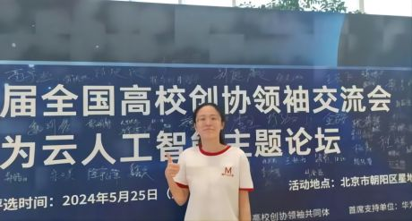
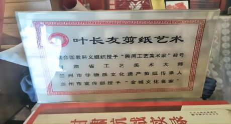
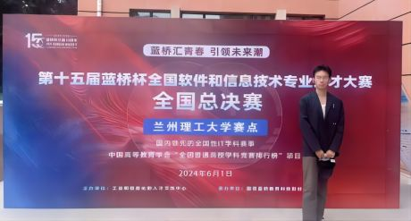
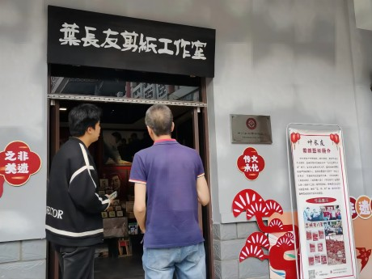
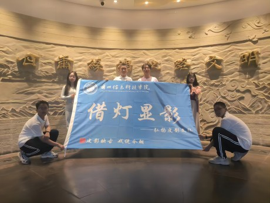
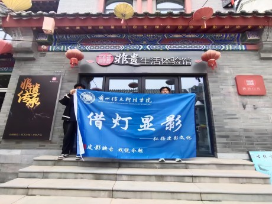

团队介绍



借灯显影团队正式成立于2024年3月，团队由9名在校大学生组成，集计算机科学与技术、物联网、机械设计制造及其自 动化、财务管理、土木工程、视觉传达设计等各专业学生于一体，实现学科交叉相融。在非物质文化遗产保护意识逐渐增强 的社会环境中，9位热衷于非遗保护的学生聚在一起，致力于构建综合性非物质文化遗产数字化保护与应用平台。为了更好的 保护和传承非物质文化遗产，我们的团队将继续以开放和创新的态度，不断探索和尝试新的方法和技术，以更好地保护和传承 非物质文化遗产。
线下调研



为了更加深入的了解环县当地对皮影文化的需求和接受程度以及探索如何将非遗项目与现代生活相结合，团队进行了线下调研， 与非遗项目传承人之间进行交流，增进了双方的理解和合作，并与皮影文化的受众群体进行互动，了解了他们对皮影文化的认知、 兴趣和态度，进一步评估市场潜力和发展空间。根据调研结果，我们可以制定相应策略，提高产品或服务在当地市场的竞争力， 促进皮影文化的传承和发展。